SRP Illustrator
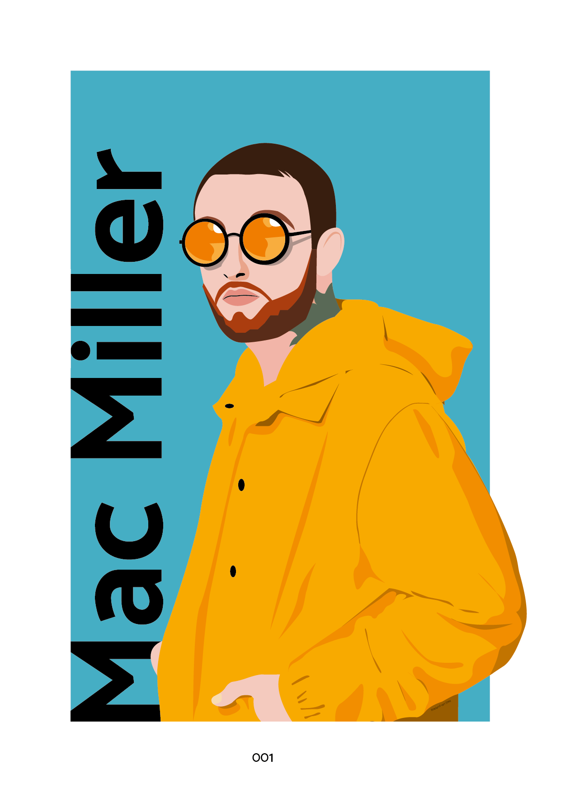
 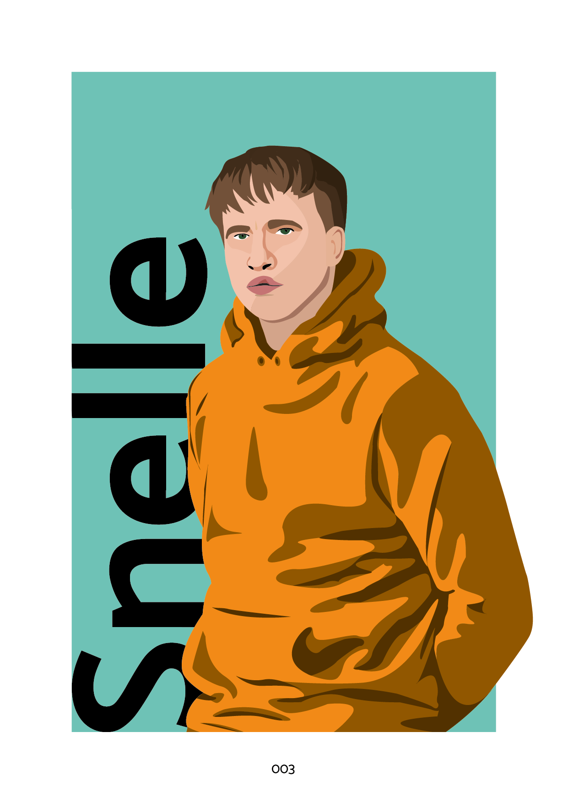
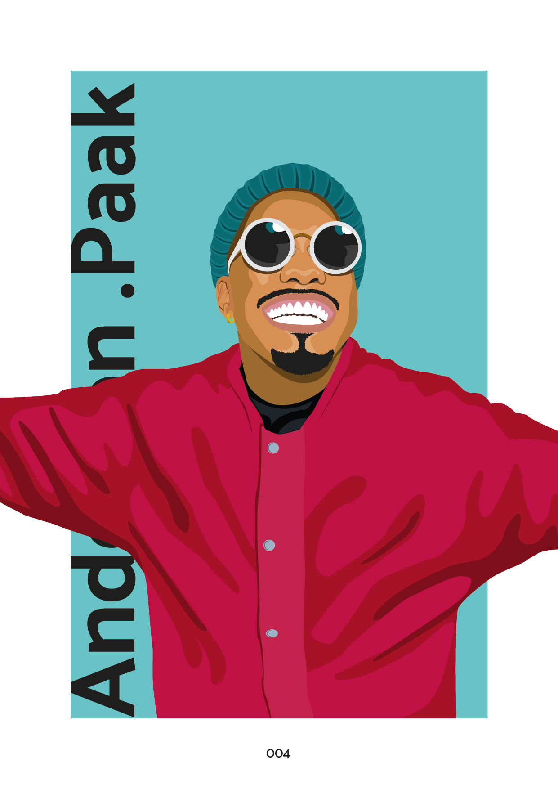
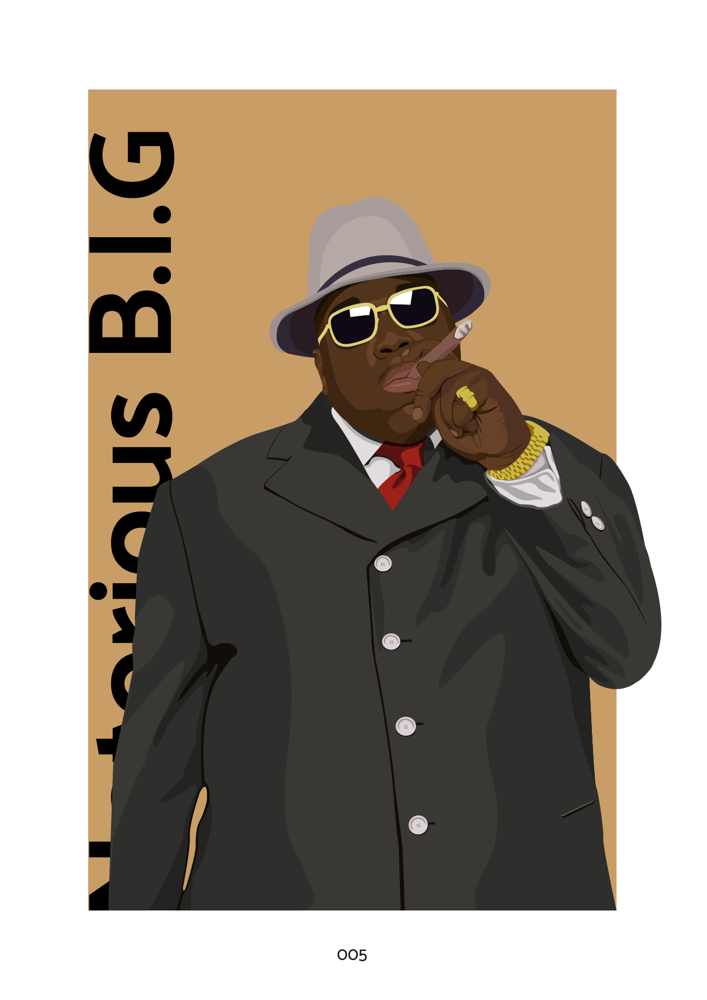
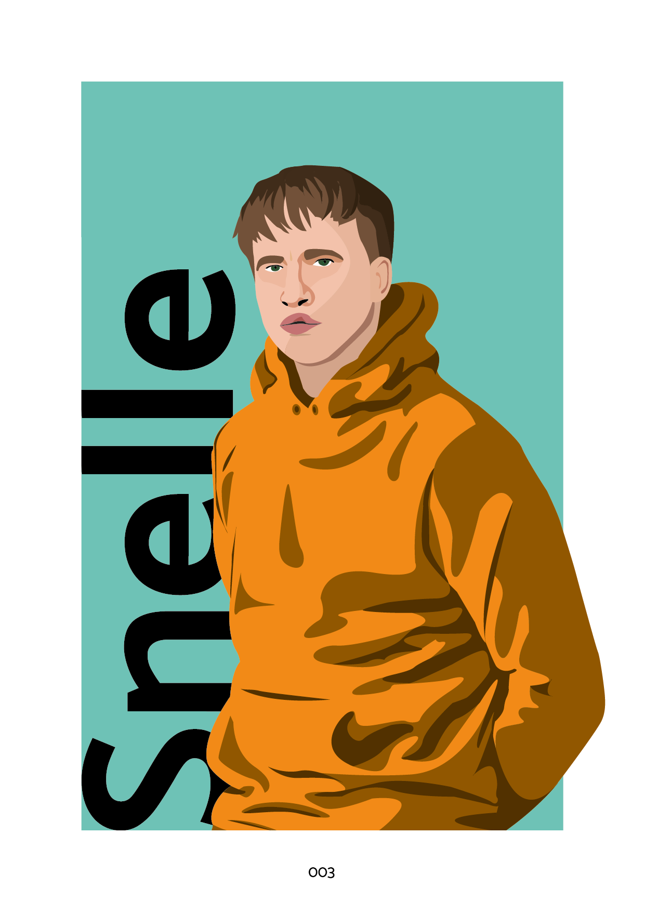
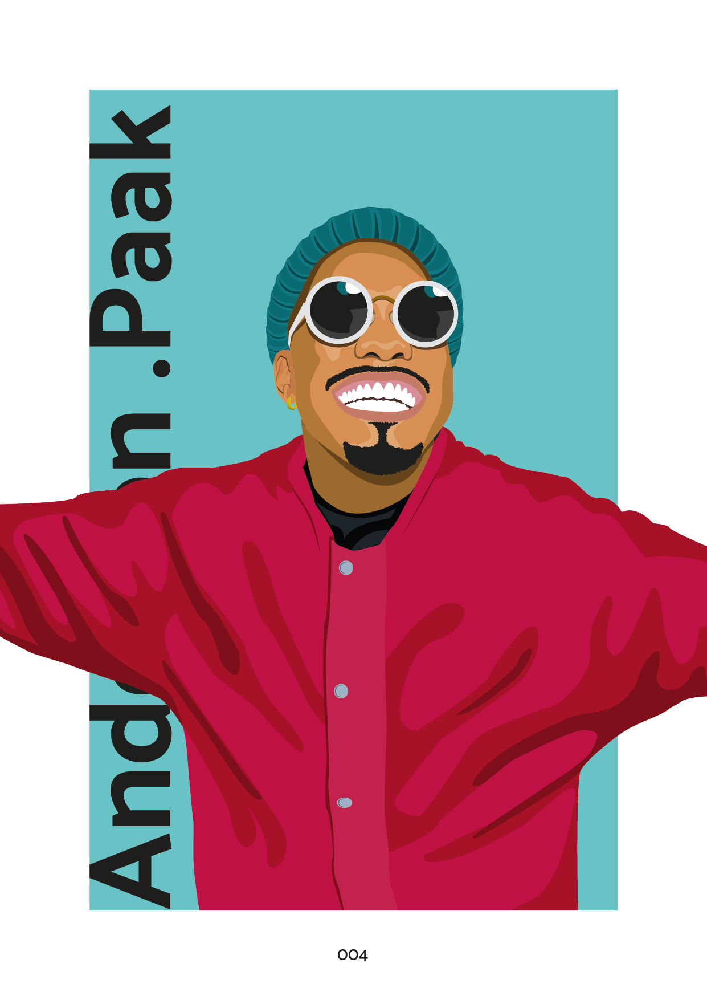
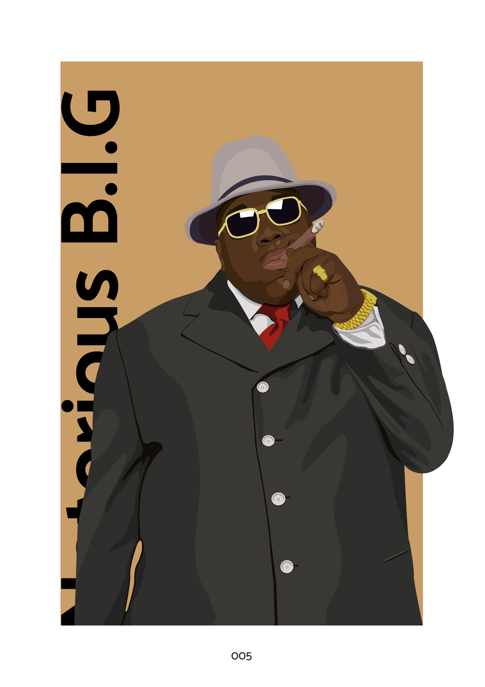

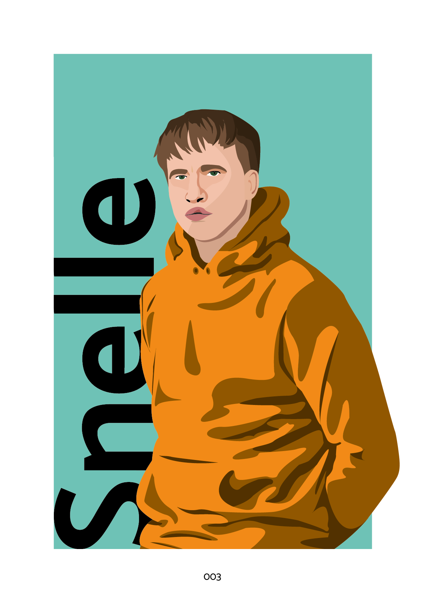
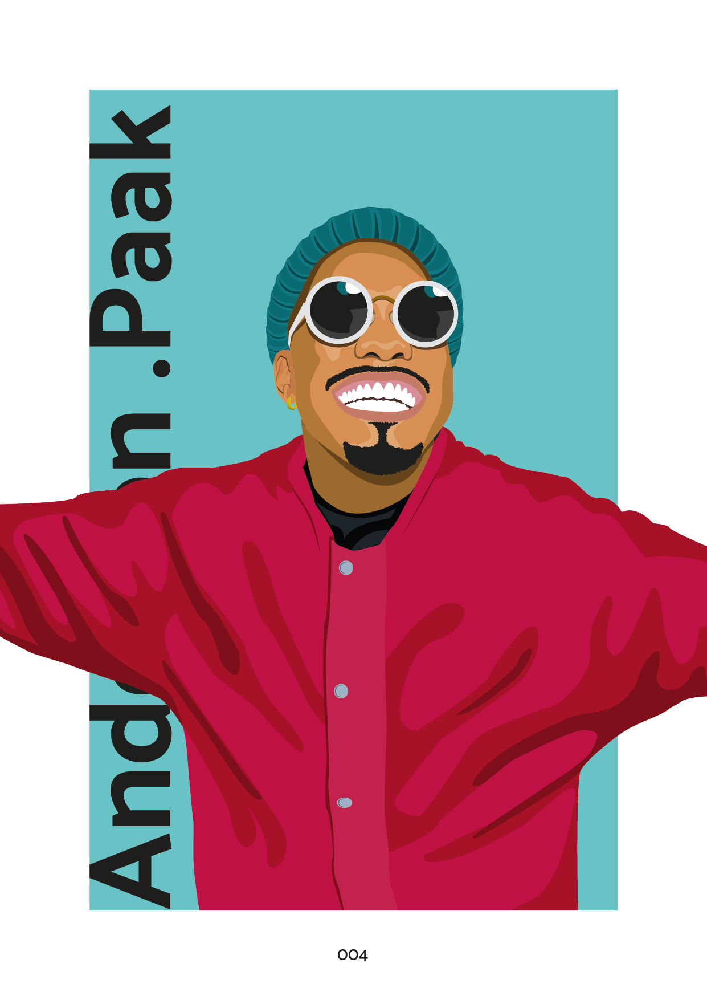
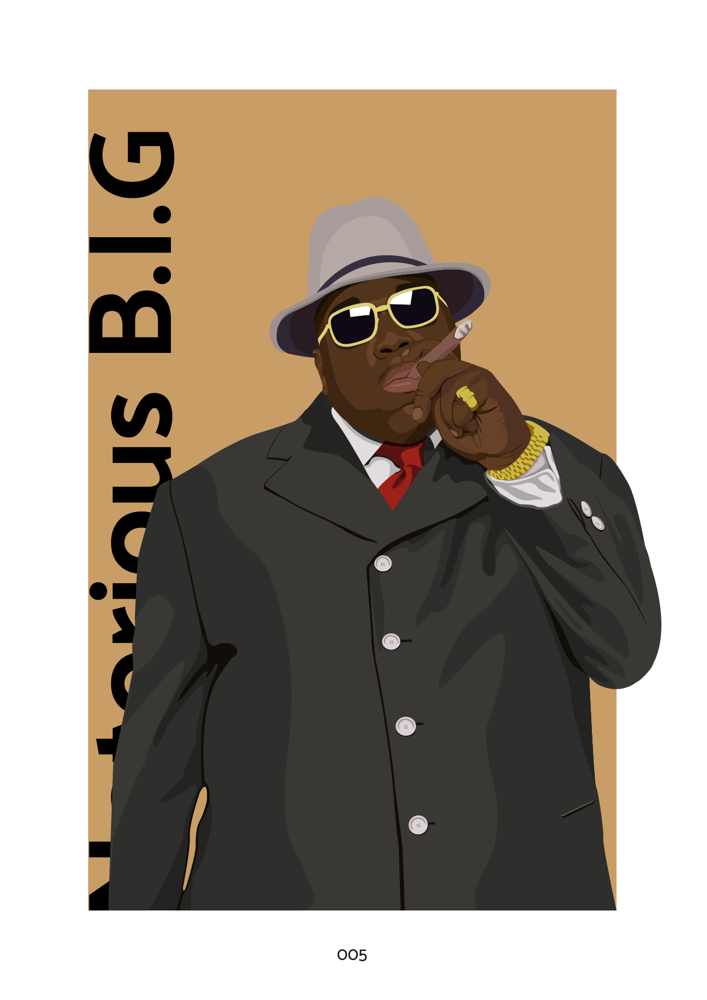
Vormgeving
HCI vond ik ook een erg leuk vak. Ik vond het leuk om alle content die op de pagina's moest op een duidelijke en speelse vorm te geven. Ook hier ben ik na school nog kort op verder gegaan. Ik had alle schermen die ik gemaakt had verwerkt in een site, zodat je door de verschillende pagina's kon klikken.
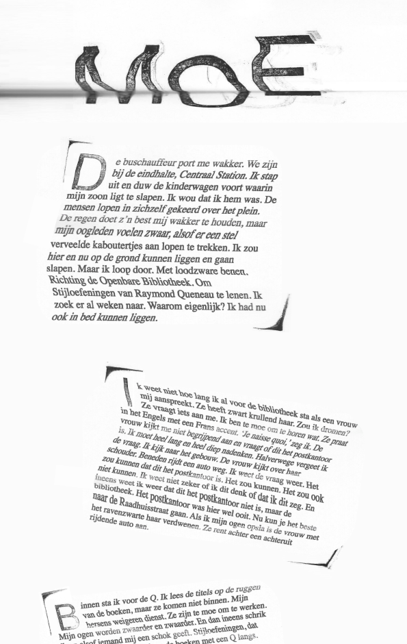